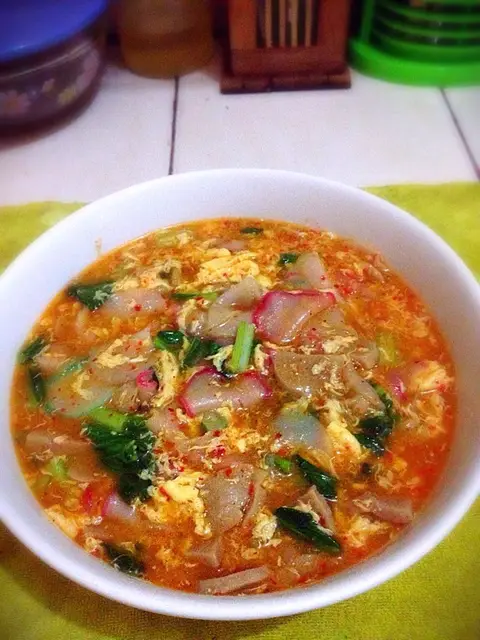

Seblak

Seblak adalah makanan asli Indonesia yang telah populer akhir-akhir ini. Seblak merupakan makanan pedas yang terdiri dari bahan utama rendaman kerupuk mentah dan mie instan.
Ingredients
- 100 gram kerupuk aci
- 7 lembar daun sawi hijau
- 5 butir bakso sapi
- 1 butir telur
- air secukupnya
Steps
- Pertama, rendam dulu kerupuk dengan air biasa (kira-kira 30 menit) biar pas dimasak cepat lembek dan ga keras, lalu potong2 daun caisim dan bakso sapi sesuai selera
- Haluskan bumbu lalu tumis sampai harum, setelah harum tambahkan air kira-kira 1 gelas (mau dibanyakin airnya jg gpp klo mau berkuah kayak yg aku bikin), tunggu air sampai mendidih
- Masukan telur yg sebelumnya sudah di kocok lepas (kalau ga di kocok dulu bau amis) jadi wajib di kocok dulu yaa hehe
- Selanjutnya masukan kerupuk, bakso dan caisim, serta gula dan garam, masak hingga matang dan sajikan selagi hangat